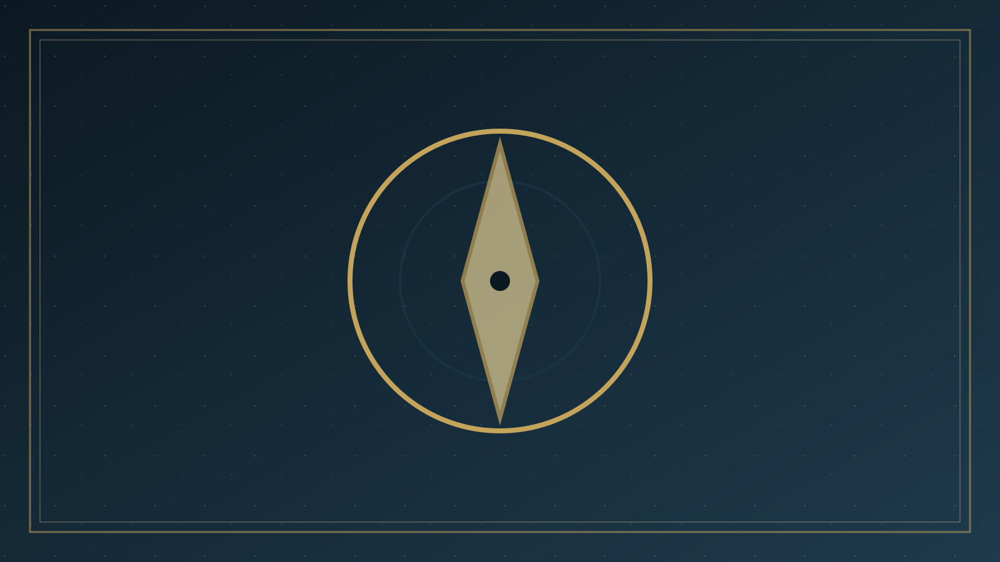

分題 07 / 07
方法與牧養
八、對「方法」的分辨：肯定因地制宜，否定以數字為義
聖經肯定因地制宜的言語與場合。耶穌在井旁談水，保羅在會堂引妥拉與先知，在路司得與雅典從創造講起，在推喇奴學房天天辯論。場合可以是聖殿、家裏、河邊、監獄、官邸。路加並不把某一個場地神聖化。言語的翻譯是愛的工作：讓聽者真正聽見他所當聽見的，而不是讓講者享受自己熟悉的套語。
聖經同時否定以數字、權勢、詭詐為義。「不行詭詐，不謬講神的道理」（林後 4:2）。帖撒羅尼迦前書拒絕諂媚與貪心（帖前 2:5）。使徒沒有用銀匠的手法去維持宗教產業，反倒因福音而與以弗所的銀匠衝突。成功的定義若是「愈來愈多人喜歡我們」，使徒行傳裏的監獄、鞭打、暴動與譏誚就無法解釋。
活動導向
聖經有聚集、也有分散；有五旬節的大日，也有兩年的學房。活動可以服事宣講，卻不能代替「神的道」被清楚講明。高潮之後若沒有教導與群體，路加會說我們只做了一半。
恐懼營銷
聖經確實講審判與永死，卻不是用驚嚇操縱決志。彼得的指證連於經文與基督的復活；保羅講「定了日子」，同時講那一位已從死裏復活的憑據。恐懼若離開十字架的恩典，就不是福音。
只講福，不講十字架
以賽亞的好消息包括釋放與禧年，也指向受苦的僕人。路加的耶穌祝福貧窮人，同時呼召捨己。若「福」變成與基督無關的成功保證，那是另一個福音，不是使徒所傳的。
溫和地說：今日許多方法在技術上中性——場地、翻譯、印刷、數位媒介，正如保羅使用羅馬道路與會堂網絡。中性一旦變成主人，要求信息為它讓路，就不再中性。分辨的問題始終是：十字架有沒有落空？真理有沒有被表明？聽者有沒有被交給神，而不是交給我們的技巧？
九、牧養結論：見證人、恩賜、忠心、生長在神
徒 1:8 的「你們……作我的見證」，主詞是門徒群體，不只是少數有講台恩賜的人。每個信徒都是見證人；這不表示每個人都是巡迴佈道家。林前 12 與弗 4 提醒我們：恩賜不同，身體卻是一個。有人善於開口講明聖經，有人善於接待、翻譯、堅守無虧的良心，使問盼望緣由的人得着回答（彼前 3:15）。教會整體宣講：聖禮、教導、慈善與聖潔生活，都在為這道作見證；個人談話不能從這整體被抽離，變成孤立的銷售技巧。
「我栽種了，亞波羅澆灌了，惟有神叫他生長。可見栽種的算不得甚麼，澆灌的也算不得甚麼，只在那叫他生長的神。」
— 哥林多前書 3:6–7
因此，忠心比技巧更先。技巧仍當學習——保羅會講希臘話，也會織帳棚，也會在官長面前分訴——但技巧不能叫人生長。結果在神。這句話不是懶惰的藉口（保羅「比眾使徒格外勞苦」，林前 15:10），而是敬拜的界線：我們拒絕把果效神化，拒絕用數字稱義，也拒絕因門關閉而以為神失敗。
回到本篇的核心論點：聖經的「策略」首先是忠於福音內容與聖靈引導，其次才是因對象調整言語。路加讓我們看見神的道從耶路撒冷走到地極；以賽亞讓我們聽見地極的光；保羅讓我們學習翻譯而不變質、自由而不諂媚。我們不是產品經理，而是見證人。主自己說：「我就常與你們同在，直到世界的末了。」同在的主，比任何策略手冊更先、也更夠。